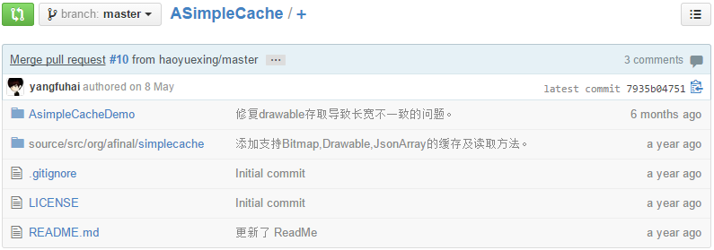

5个强大的Java分布式缓存框架推荐
2014-11-17 分类：JAVA开发、云计算/大数据、编程开发、首页精华5人评论
本文由码农网 – 小峰原创，转载请看清文末的转载要求，欢迎参与我们的付费投稿计划！
在开发中大型Java软件项目时，很多Java架构师都会遇到数据库读写瓶颈，如果你在系统架构时并没有将缓存策略考虑进去，或者并没有选择更优的缓存策略，那么到时候重构起来将会是一个噩梦。本文主要是分享了5个常用的Java分布式缓存框架，这些缓存框架支持多台服务器的缓存读写功能，可以让你的缓存系统更容易扩展。
1、Ehcache – Java分布式缓存框架
Ehcache是一个Java实现的开源分布式缓存框架，EhCache 可以有效地减轻数据库的负载，可以让数据保存在不同服务器的内存中，在需要数据的时候可以快速存取。同时EhCache 扩展非常简单，官方提供的Cache配置方式有好几种。你可以通过声明配置、在xml中配置、在程序里配置或者调用构造方法时传入不同的参数。

官方网站：http://ehcache.org/
使用教程：http://www.codeceo.com/article/java-ehcache.html
2、Cacheonix – 高性能Java分布式缓存系统
Cacheonix同样也是一个基于Java的分布式集群缓存系统，它同样可以帮助你实现分布式缓存的部署。

官方网站：http://www.cacheonix.com/
使用教程：http://www.codeceo.com/article/java-cacheonix.html
3、ASimpleCache – 轻量级Android缓存框架
ASimpleCache是一款基于Android的轻量级缓存框架，它只有一个Java文件，ASimpleCache基本可以缓存常用的Android对象，包括普通字符串、JSON对象、经过序列化的Java对象、字节数组等。

官方网站：https://github.com/yangfuhai/ASimpleCache
使用教程：http://www.codeceo.com/article/asimplecache-android-cache.html
4、JBoss Cache – 基于事物的Java缓存框架
JBoss Cache是一款基于Java的事务处理缓存系统，它的目标是构建一个以Java框架为基础的集群解决方案，可以是服务器应用，也可以是Java SE应用。

官方网站：http://jbosscache.jboss.org/
使用教程：http://www.codeceo.com/article/jboss-cache-java.html
5、Voldemort – 基于键-值（key-value）的缓存框架
Voldemort是一款基于Java开发的分布式键-值缓存系统，像JBoss Cache一样，Voldemort同样支持多台服务器之间的缓存同步，以增强系统的可靠性和读取性能。

官方网站：http://www.project-voldemort.com/voldemort/
使用教程：http://www.codeceo.com/article/voldemort-java-key-value-catch.html
各位如果还有更好的分布式Java缓存框架，欢迎在评论中留言推荐，本文将持续进行更新。
本文链接：http://www.codeceo.com/article/5-java-distribute-cache.html
本文作者：码农网 – 小峰
[ 原创作品，转载必须在正文中标注并保留原文链接和作者等信息。]

![[汗]](5个强大的Java分布式缓存框架推荐_files/Image.gif "[汗]")